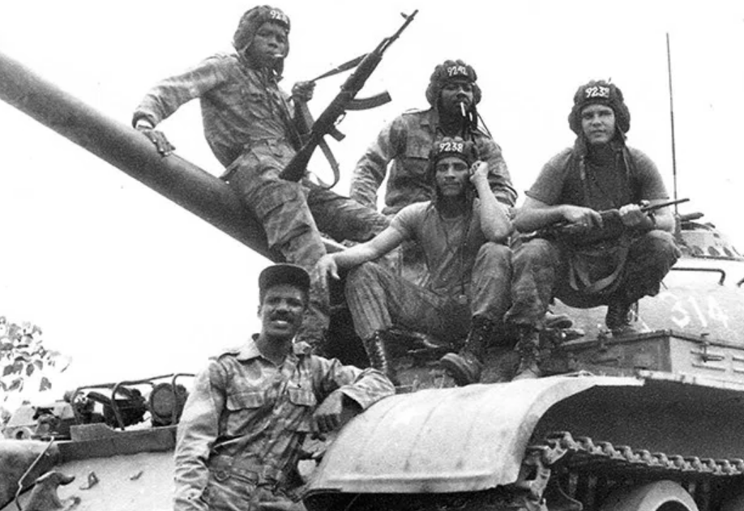

By: Guilherme Mendes, Arthur Choi and Enzo Pastori
Why did the civil war in Angola start?
The Civil War in Angola started immediately after the formal independence of the country from its colonizers - Portugal - in 1975. The conflict war was conducted mainly by two former anti-colonial movements, the communist MPLA and the anti-communist UNITA, to determine which of them would govern the country. This war was used as a surrogate battleground for the Cold War, which was happening outside the borders of Angola, by the worldwide rival states - such as the Soviet Union, Cuban United States, and South Africa.
Even though both of the movements had the same desire - to put an and on the colonial rule - they had mutually incompatible leaderships and ideals. There was also the FNLA, which had fought the MPLA with UNITA during the war for the Portuguese independence, yet, they didn't play a major role in the Civil war compared to the other two.
The Angolan Civil War was obviously due to the combination of the great amount of intervention in the territory from foreign powers, with the violent internal dynamics that Angola had at that time - the movements and different groups of people fighting each other for the power to control the country. To most, this war is considered to be a Cold War proxy conflict, since the Soviet Union and the United States, with their own allies, provided assistance to the already fighting opposing faction inside the Angolan territory.
The civil war lasted 27 years. This period can be divided into 3 main periods of fighting, with small-time periods of peace. By the time that MPLA achieved its victory (2002), 600 thousand people had died, while more than a million people has been displaced inside the territory.
How was peace achieved in Angola?
The resolution of the Angolan Civil War was achieved through multiple military campaigns by the government forces (MPLA) against the UNITA forces. Peace was only achieved after the UNITA's leader was killed on the battlefield on 22 February 2002. After that, the government tried a formal signing of a peace agreement between them and the UNITA rebels. The United Nations said that the ceasefire was only a first step that would lead to democracy, development, and justice. Thousands of people dressed in white marched through the streets of Luanda, the capital, celebrating the end of the war and symbolizing peace.
The general consept of de-colonization is about the process in which colonized contries - such as India, Ghana, Angola - passed through in order to assert themselves as independent. Each country's way in achieving it was different from each other, whether if it was more agressive - with ratiots and violent protests -, or more peacefull - with leaders that did not support violent protests or behaviours. Some examples of:
France occupied Vietnam and needed to stop WWII, and after the war, the South was reoccupied, the Ho Chi Min group took control of the North, and France tried to reestablish rule in the North, sparking a war lasting until 1954. The peace treaty left the country split into North and South with a reunification election planned for 1956. Vietnam introduced capitalist reforms.
The movie is able to demonstrate with imagery how the civil war affected Angola from a perspective of a foreign (Polish) reporter that was established in the territory. By the eyes of the reporter, the audience is able to conclude that the Cold War, was considered a "peaceful" war since it didn't affect physically USA or USSR, however it had great effects on other territories. The movie is able to show the lives of people. The movie also introduces to us both of the parties, MPLA and FNLA, and the idea that both of those parties are controlled by the big powers of the world, the USA and the USSR, and demonstrates how people's lives were affected by those powers.
Despite most people thinking the Cold War was not a “real” war because it didn't physically affect the USA or USSR, it was a war that affected lots of other territories. The film demonstrates how the Cold War affected Angola by showing us a reporter from Poland that was there to report what was going on in the war. Because of Ryszard Kapuscinski, we can see how the lives of the people during the war were, how terrified they were, and how the two parties - MPLA and FNLA - played a role in being USA vs USSR.
As Ryszard Kapuscinski said in the movie's last scene, "first from the world and then from our memory. I will write, they will never be forgotten", people's histories tend to be forgotten as the years go on. His wish is to make those people noticed in the general history of the world while making the living not to forget who they really were (their face, their characteristics, their history). He successfully achieves his goal by telling their stories to magazines and newspapers, which eventually became “Another Day of Life.”